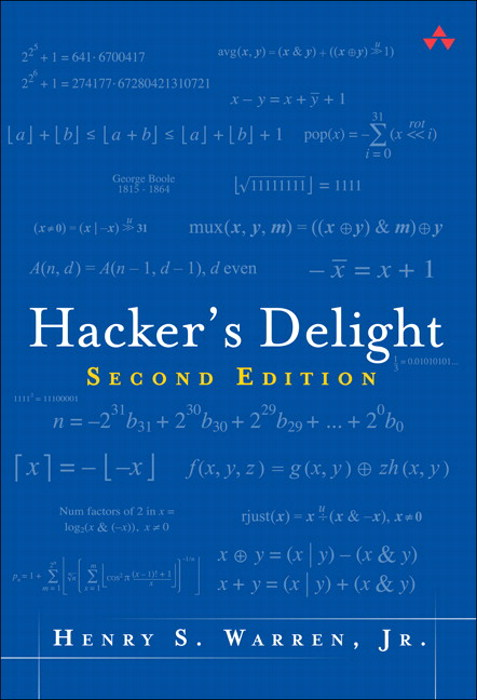

提醒
请大家及时关注课程网站发布的作业
HW2/Lab2 已发布
PA2.2 已临近截止
以各位的平均水准来看，完成 PA 的时间是长于预估时间的
- 如果还没有开始……
本讲概述
我们已经知道数据是如何在计算机中表示的。但为什么要这样表示？这样的表示有什么好处和用法？
- 位运算与单指令多数据
- 整数溢出与 Undefined Behavior
- IEEE754 浮点数
位运算与单指令多数据
为什么会有位运算？
逻辑门和导线是构成计算机 (组合逻辑电路) 的基本单元
- 位运算是用电路最容易实现的运算
&(与),|(或),~(非)^(异或)<<(左移位),>>(右移位)- 例子：一代传奇处理器 8-bit MOS 6502
- 3510 晶体管；56 条指令，算数指令仅有加减法和位运算
- 数学上自然的整数需要实现成固定长度的 01 字符串
习题：用上述位运算和常数实现 4 位整数的加法运算/Lab1
- 加法比上述运算在电路上实现 fundamentally 更困难 (为什么？)
- “Circuit Complexity”
整数：固定长度的 Bit String
142857 -> 0000 0000 0000 0010 0010 1110 0000 1001
- 假设 32-bit 整数；约定 MSB 在左，LSB 在右
热身问题：字符串操作
- 分别取出 4 个字节
- 交换高/低 16 位
单指令多数据
&,|,~, ... 对于整数里的每一个 bit 来说是独立 (并行) 的
如果我们操作的对象刚好每一个 bit 是独立的
- 我们在一条指令里就实现了多个操作
- SIMD (Single Instruction, Multiple Data)
例子：Bit Set
- 32-bit 整数 $x \to S \subseteq \{0,1,2,\ldots,31\}$
- 位运算是对所有 bit
同时 完成的- C++ 中有
bitset，性能非常可观
- C++ 中有
Bit Set: 基本操作
测试 $x\in S$
(S >> x) & 1
求 $S' = S\cup{x}$
S | (1 << x)
更多习题
- 求 $|S|$
- 求 $S_1 \cup S_2$, $S_1 \cap S_2$
- 求 $S_1 \setminus S_2$
- 遍历 $S$ 中的所有元素 (foreach)
Bit Set: 求 $|S|$
int bitset_size(uint32_t S) {
int n;
for (int i = 0; i < 32; i++) {
n += bitset_contains(S, i);
}
return n;
}
int bitset_size1(uint32_t S) { // SIMD
S = (S & 0x55555555) + ((S >> 1) & 0x55555555);
S = (S & 0x33333333) + ((S >> 2) & 0x33333333);
S = (S & 0x0F0F0F0F) + ((S >> 4) & 0x0F0F0F0F);
S = (S & 0x00FF00FF) + ((S >> 8) & 0x00FF00FF);
S = (S & 0x0000FFFF) + ((S >> 16) & 0x0000FFFF);
return S;
}
Bit Set: 返回 $S\ne\varnothing$ 中的某个元素
有二进制数x = 0b+++++100，我们希望得到最后那个100
- 想法：使用基本操作构造一些结果，能把
+++++的部分给抵消掉
| 表达式 | 结果 |
|---|---|
x |
0b+++++100 |
x-1 |
0b+++++011 |
~x |
0b-----011 |
~x+1 |
0b-----100 |
一些有趣的式子：
x & (x-1)→0b+++++000；x ^ (x-1)→0b00000111x & (~x+1)→0b00000100(lowbit️)x & -x,(~x & (x-1)) + 1都可以实现 lowbit- 只遍历存在的元素可以加速求 $|S|$
Bit Set: 求 $\lfloor \log_2(x) \rfloor$
等同于 $31 - \mathrm{clz}(x)$
int clz(uint32_t x) {
int n = 0;
if (x <= 0x0000ffff) n += 16, x <<= 16;
if (x <= 0x00ffffff) n += 8, x <<= 8;
if (x <= 0x0fffffff) n += 4, x <<= 4;
if (x <= 0x3fffffff) n += 2, x <<= 2;
if (x <= 0x7fffffff) n ++;
return n;
}
(奇怪的代码) 假设 $x$ 是 lowbit 得到的结果？
#define LOG2(x) \
("-01J2GK-3@HNL;-=47A-IFO?M:<6-E>95D8CB"[(x) % 37] - '0')
Bit Set: 求 $\lfloor \log_2(x) \rfloor$ (cont'd)
用一点点元编程 (meta-programming)；试一试 log2.c
import json
n, base = 64, '0'
for m in range(n, 10000):
if len({ (2**i) % m for i in range(n) }) == n:
M = { j: chr(ord(base) + i)
for j in range(0, m)
for i in range(0, n)
if (2**i) % m == j }
break
magic = json.dumps(''.join(
[ M.get(j, '-') for j in range(0, m) ]
)).strip('"')
print(f'#define LOG2(x) ("{magic}"[(x) % {m}] - \'{base}\')')
一本有趣的参考书
Henry S. Warren, Jr. Hacker's Delight (2ed), Addison-Wesley, 2012.

让你理解写出更快的代码并不是 “瞎猜”
- 主要内容是各种数学 (带来的代码优化)
- 官方网站：hackersdelight.org
- 见识一下真正的 “奇技淫巧”
整数溢出与 Undefined Behavior
Undefined Behavior (UB)
Undefined behavior (UB) is the result of executing computer code whose behavior is not prescribed by the language specification to which the code adheres, for the current state of the program. This happens when the translator of the source code makes certain assumptions, but these assumptions are not satisfied during execution. -- Wikipedia
C 对 UB 的行为是不做任何约束的，把电脑炸了都行
- 常见的 UB：非法内存访问 (空指针解引用、数组越界、写只读内存等)、被零除、有符号整数溢出、函数没有返回值……
- 通常的后果比较轻微，比如 wrong answer, crash
为什么 C/C++ 会有 UB？
为了尽可能高效 (zero-overhead)
- 不合法的事情的后果只好 undefined 了
- Java, js, python, ... 选择所有操作都进行合法性检查
为了兼容多种硬件体系结构
- 有些硬件
/0会产生处理器异常 - 有些硬件啥也不发生
- 只好 undefined 了
Undefined Behavior: 一个历史性的包袱
埋下了灾难的种子
- CVE: Common Vulnerabilities and Exposures，公开发布软件中的漏洞
- buffer/integer overflow 常年占据 CVE 的一席之地
- 高危漏洞让没有修补的机器立马宕🐔/变成肉🐔
例子：CVE-2018-7445 (RouterOS), 仅仅是忘记检查缓冲区大小……
while (len) {
for (i = offset; (i - offset) < len; ++i) {
dst[i] = src[i+1];
}
len = src[i+1]; ...
offset = i + 1;
}
Undefined Behavior: 警惕整数溢出
| 表达式 | 值 |
|---|---|
UINT_MAX+1 |
0 |
INT_MAX+1; LONG_MAX+1 |
undefined |
char c = CHAR_MAX; c++; |
varies (???) |
1 << -1 |
undefined |
1 << 0 |
1 |
1 << 31 |
undefined |
1 << 32 |
undefined |
1 / 0 |
undefined |
INT_MAX % -1 |
undefined |
- W. Dietz, et al. Understanding integer overflow in C/C++. In Proceedings of ICSE, 2012.
整数溢出和编译优化
int f() { return 1 << -1; }
根据手册，这是个 UB，于是 clang 这样处置……
0000000000000000 :
0: c3 retq
编译器把这个计算直接删除了
W. Xi, et al. Towards optimization-safe systems: Analyzing the impact of undefined behavior. In Proceedings of SOSP, 2013.
浮点数：IEEE 754
实数的计算机表示
实数非常非常多 ($\aleph_0 < \mathfrak c$)
- 只能用 32/64-bit 01 串来表示
一小部分 实数- 确定一种映射方法，把一个 01 串映射到一个实数
- 运算起来不太麻烦
- 计算误差不太可怕
- 确定一种映射方法，把一个 01 串映射到一个实数
于是有了 IEEE754 (1bit S, 23/52bits Fraction, 8/11bits Exponent)
$$x = (-1)^S \times (1.F) \times 2^{E - B}$$

IEEE754: 你可能不知道的事实
一个有关浮点数大小/密度的实验 (float.c)
越大的数字，距离下一个实数的距离就越大
- 可能会带来相当的绝对误差
- 因此很多数学库都会频繁做归一化
例子：计算 $1 + \frac{1}{2} + \frac{1}{3} + \ldots + \frac{1}{n}$
#define SUM(T, st, ed, d) ({ \
T s = 0; \
for (int i = st; i != ed + d; i += d) \
s += (T)1 / i; \
s; \
})
- 浮点数：$ (a + b) + c \ne a + (b + c)$
IEEE754: 你可能不知道的事实 (cont'd)
比较
a == b需要谨慎判断 (要假设自带 $\varepsilon$)
非规格化数 (Exponent == 0)
- $x = (-1)^S \times (0.F) \times 2^{-126}$
零
+0.0,-0.0的 $S$ bit 是不一样的，但+0.0 == -0.0
Inf/NaN (Not a Number)
- Inf: 浮点数溢出很常见，不应该作为 undefined behavior
- NaN (
0.0/0.0): 能够满足x != x表达式的值
IEEE754：异常复杂
除了 $x = (-1)^S \times (1.F) \times 2^{E - B}$，还要考虑
- 非规格化数, +0.0/-0.0, Inf, NaN
- 一度引起了硬件厂商的众怒 (碰到非规格数干脆软件模拟吧)
- 很多“对浮点数精度要求不高”硬件厂商选择不兼容 IEEE 754 (比如各种 GPU 制造商)
- Nvidia 从 Fermi 才开始完整支持 IEEE754 (2010)
An interview with the old man of floating-point. Reminiscences elicited from William Kahan by Charles Severance.
例子：计算 $\frac{-b - \sqrt{b^2-4ac}}{2a}$
如果考虑比较极端的数值条件？
- 消去误差: $-b$ v.s. $ \sqrt{b^2-4ac} $ (catastrophic cancellation)
- 还记得
x + 1.0 == x的例子吗
- 还记得
- 溢出: $b^2$
一个更好的一元二次方程求根公式
- $\frac{(-b)^2 - (\sqrt{b^2-4ac})^2}{ (-b) + \sqrt{b^2-4ac}} /2a = \frac{4ac}{(-b)+\sqrt{b^2-4ac}}/2a $ ($b < 0$)
- $(-b-\sqrt{b^2-4ac}) \cdot \frac{1}{2a}$ ($0\le b\le 10^{127}$)
- $-\frac{b}{a}+\frac{c}{b}$ ($b > 10^{127}$)
- P. Panchekha, et al. Automatically improving accuracy for floating point expressions. In Proc. of PLDI, 2015.
凭什么？
It looked pretty complicated. On the other hand, we had a rationale for everything. -- William Kahan, 1989 ACM Turing Award Winner for his fundamental contributions to numerical analysis.
+0.0/-0.0 和 Inf 保证 $(1/x)/x$ 不会发生 sign shiftIEEE754 天才的设计保证了数值计算的稳定
- 如果想了解 IEEE754，请阅读 D. Goldberg. What every computer scientist should know about floating-point arithmetic. ACM Computing Surveys, 23(1), 1991.
数据的机器级表示：综合案例
案例：计算 $1/\sqrt{x}$
应用：Surface Norm
- 平面的法向量
- 用于计算光照/反射
第一次感觉数学派上了用场
- 计算方法
- 幂级数展开
- 二分法
- 牛顿法……
如何不借助硬件指令，快速 (近似) 计算 $f(x)$？
- 人眼对像素级的误差并不敏感，因此算错一点也没事
- 快 1.5 倍: $ 640 \times 480 \to 800 \times 600 $ (这个推导不严格)
神奇的 $O(1)$ 代码
float Q_rsqrt( float number ) {
union { float f; uint32_t i; } conv;
float x2 = number * 0.5F;
conv.f = number;
conv.i = 0x5f3759df - ( conv.i >> 1 ); // ???
conv.f = conv.f * ( 1.5F - ( x2 * conv.f * conv.f ) );
return conv.f;
}
看看别人的毕业设计
- Matthew Robertson. A Brief History of InvSqrt, Bachelor Thesis, The University of New Brunswick, 2012.
案例：计算 $(a\times b) \bmod m$
int64_t multimod_fast(int64_t a, int64_t b, int64_t m) {
int64_t x = (int64_t)((double)a * b / m) * m;
int64_t t = (a * b - x) % m;
return t < 0 ? t + m : t;
}
令 $a \times b = p \cdot m + q$
a * b→ $(p \cdot m + q) \bmod 2^{64}$x→ $(\lfloor \frac{p\cdot m+q}{m} \rfloor \cdot m) \bmod 2^{64}$- 如果浮点数的精度是无限的，$x = (p\cdot m) \bmod 2^{64}$
- 同余就得到了 $q$
总结
数据的机器级表示
Everything is a bit-string!
- 但却能玩出很多花样来
- bit-set/SIMD
- 浮点数的表示
PA: 禁止写出不可维护的代码
- 如果你想玩出花，请做合适的封装和充分的测试